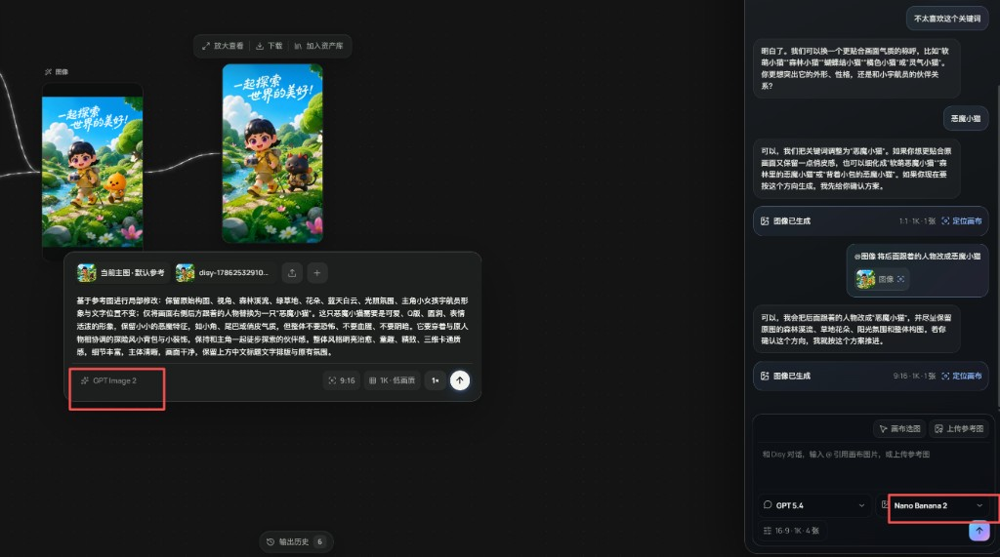
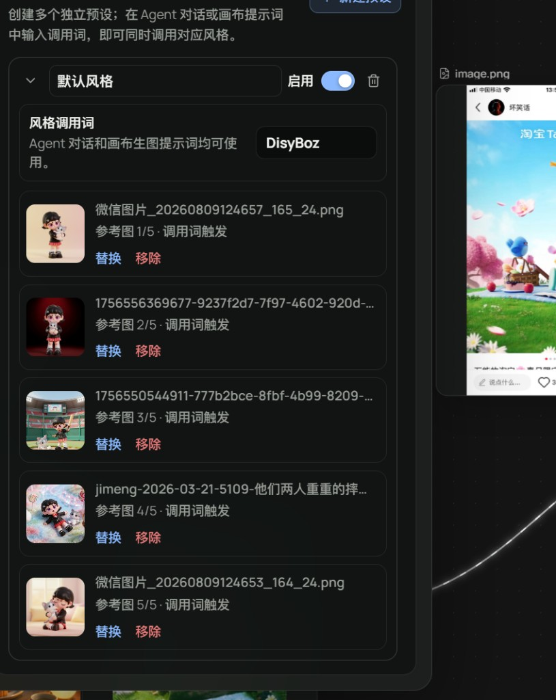

无限画布
节点、连线、组合、框选、小地图和系统图片粘贴，让素材关系一眼可见。
把灵感、参考图、提示词、Agent 对话和生成结果放回同一张持续生长的无限画布。
不是又一个输入框。
Agent 不会在你说完想法后直接扣费生图。每个任务都保留可编辑的确认步骤，并固定在对应回复旁边。

Canvas + Agent · 同一份创作上下文节点、连线、组合、框选、小地图和系统图片粘贴，让素材关系一眼可见。
建立多个风格预设，用一句调用词同时带入角色、配色与画面语言。
任务进行中可以切换画布或对话，结果仍会准确回到发起它的位置。
项目、资产、历史和 Agent 会话保存在本机浏览器；导出为完整 .disy 项目包。
每个预设独立管理名称、调用词、启用状态与 1–5 张参考图。超过面板高度后自然滚动，不挤压工作区。

视频模型、首尾帧、参考图、任务状态与视频资产管理。
人物、场景与分镜设定可以独立复用和组合调用。
补齐常用图像编辑动作，让结果继续在画布内生长。
加入浅色主题、Skill 上传、节点搜索与 Agent 历史搜索。
桌面端应用 · Web/桌面项目导入导出与双向传递 · 服务端任务 · 账号与云同步 · 项目分享与多人协作
Disy 聚焦视觉创作。音频生成不在现在或未来的产品规划中。